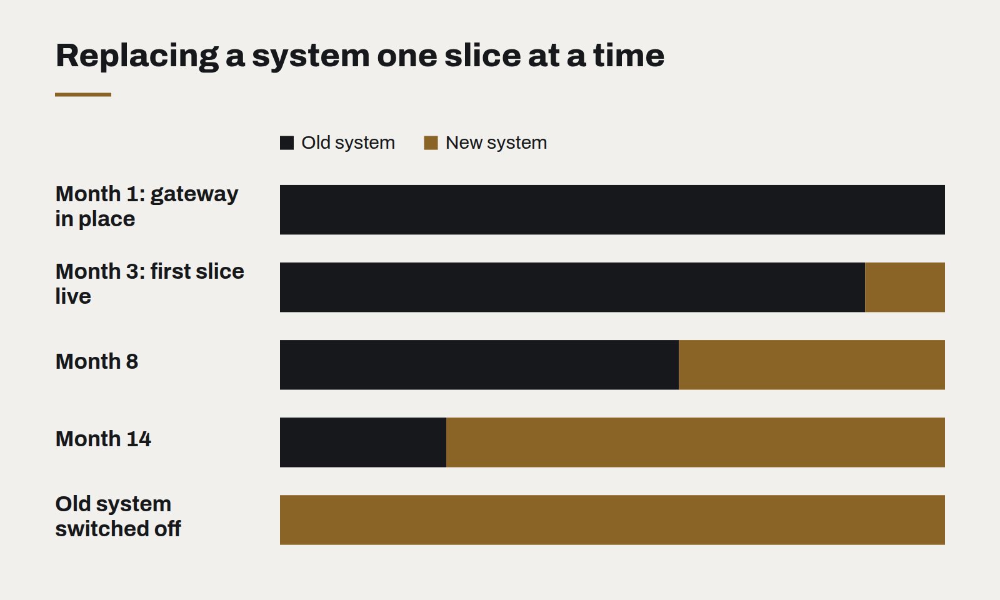

Legacy modernisation without the big bang
The rewrite that replaces everything at once is the most reliable way to lose two years. Replacing a system one route at a time is slower to describe and much faster to finish.
Every organisation with a system more than ten years old has had the conversation. The code is hard to change, the people who understood it have left, the technology is out of support, and the obvious answer seems to be a clean rewrite: build the new system alongside, switch over on a chosen weekend, retire the old one.
The obvious answer has a poor record. Big-bang rewrites routinely run far over time and budget, because the old system turns out to contain years of undocumented rules that nobody remembers until the new one gets them wrong. Meanwhile the business still needs changes, which now have to be made twice. Many such projects are cancelled after years of spending, leaving the old system in place and less maintained than before.
Replace it one piece at a time
The alternative has been known for decades and is often called the strangler pattern, after a vine that grows around a tree until it can stand alone. Instead of replacing the whole system at once, you put a routing layer in front of it and move functionality across piece by piece.
- Put a front door in place. A proxy or gateway that receives every request and, at first, sends all of them to the old system. Nothing changes for users.
- Pick one slice. A single screen, a single report, one API endpoint — ideally something valuable, self-contained and painful in the current system.
- Build it new, and route to it. The gateway sends that slice to the new implementation. Everything else still goes to the old system.
- Compare, then commit. For a while, run both and check that they agree. When they do, retire the old version of that slice.
- Repeat. Each slice makes the old system smaller and the new one more complete, until the old system handles nothing and can be switched off.

Why it works better
- Value arrives early. The first improved screen can be live within weeks, not at the end of a multi-year programme.
- Risk is contained. Each switch affects one slice and can be reversed by changing a route.
- Hidden rules surface gradually. When the new version of a slice disagrees with the old one, you have found an undocumented rule — one at a time, with a working reference to compare against.
- The business keeps moving. New features go into the new system from the start, so nothing is built twice for long.
- You can stop. If priorities change halfway, you are left with a partly modernised system that works, not a half-finished rewrite that doesn't.
The hard parts
Data is the difficult bit. Old and new implementations usually need to share a database for a while, or keep two in sync, and that needs careful design. The gateway becomes important infrastructure and must be treated as such. And the approach requires patience from sponsors, because progress is steady rather than dramatic.
But steady is the point. A modernisation that delivers something useful every month is one the business will keep funding. One that promises everything on a single weekend two years away rarely gets there.
What changes when software is cheap to write
AI coding tools have made producing code dramatically faster. They have not made deciding what to build, checking that it works or running it for years any cheaper — and that shifts where the value is.
Passkeys are ready. Your login page probably isn't.
Phishing-resistant sign-in now works across the devices your customers already own. The technology is done; what remains is product design and a sensible migration plan.
WebGPU and the return of the rich web
Real-time 3D, large visualisations and on-device AI now run in an ordinary browser tab. The question is no longer whether the web can do it, but whether your content deserves it.